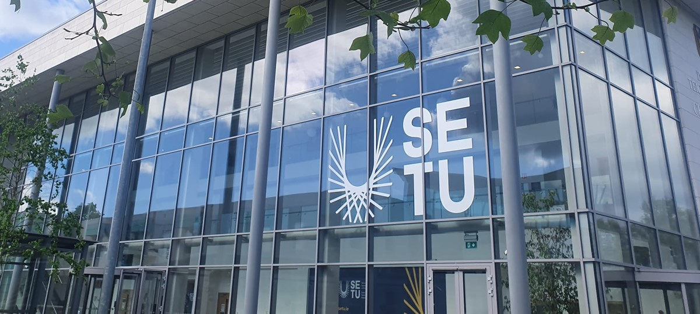
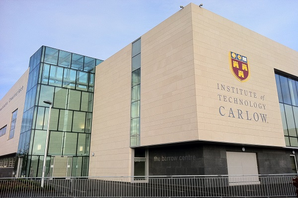

|
My School |
|---|
Home |
My Hobbies |
My Program |
|---|
|  | South East Technological University is a public technological university located in the South East region of Ireland. It was formed from the amalgamation of two existing institutes of technology in the region - Waterford IT and IT Carlow. Following years of discussions and planning, its formation was announced in November 2021 and was formally established on 1 May 2022. |
The Institute of Technology, Carlow was an institute of technology, located in Carlow, Ireland. The institute had campuses in Carlow, Wexford, and Wicklow, as well as a part-time provision elsewhere in Ireland. Along with the Waterford Institute of Technology, the institute was dissolved on 1 May 2022 and was succeeded by the South East Technological University. |
 |
goto SETU Carlow |
Contact Me |